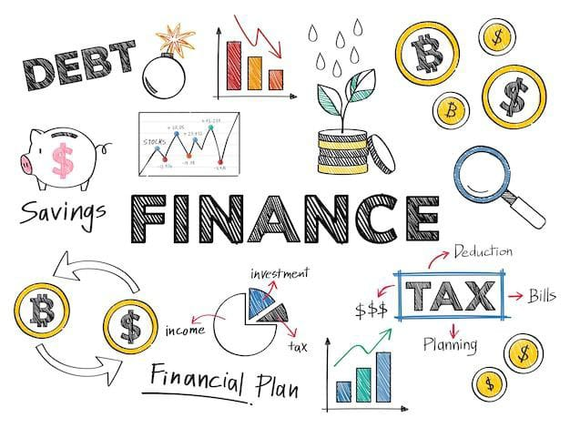

Your Future Is In Your Hands
Are you confused about which stream to choose after 10th?
Don't worry, we've got you covered.
Commerce is an education stream which offers the students a study of trade and business activities such as the exchange of goods and services from producer to the final consumer. The Commerce stream in Class 11 and 12 includes various subjects like Economics, Accountancy and Business Studies.

The Main Subjects included in Commerce Stream are as follows:
- English Language
- Accountancy
- Economics
- Business Studies/ Organisation of Commerce
- Mathematics
- Information Practices
- Statistics
Click below to check out the Best Commerce Colleges in Mumbai
Commerce Colleges In Mumbai
Here is a list of the most Popular Commerce Courses after 12th
- Bachelor of Commerce.(B.Com)
- Chartered Accountancy.
- Bachelor Of Economics.(BE)
- Bachelor of Business Management.(BBM)
- Bachelors of Business Administration (BBA)
- Bachelor of Business Administration – Computer Applications.(BBA-CA)
- Journalism and Mass Communication.
- Certified Financial Planner.(CFP)
- Bachelor of Accounting and Finance(BAF)
- Bachelor of Commerce in Financial Market (BFM)
- Company Secretary (CS)
- Bachelor of Business Administration – International Business (BBA-IB)
- Cost and Management Accountant
- Chartered Financial Analyst(CFA)
- Certified Public Accountant(CPA)
- Marketing Manager
- Investment Banker
- Cost Management Accountant(CMA)
- Bachelor of Management Studies(BMS)
- Bachelor of Law (LLB)